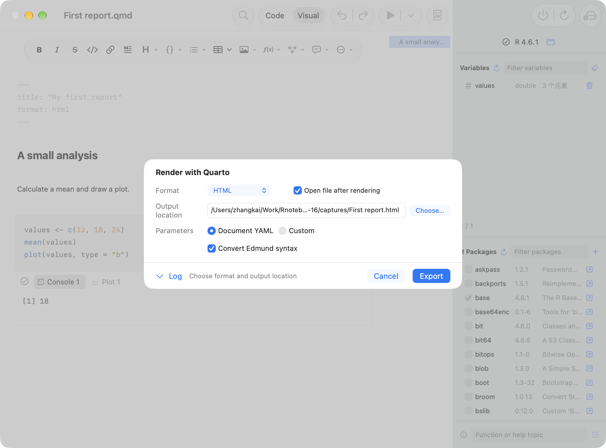

Quarto and QMD Basics
Quarto combines Markdown prose, code and document options into reports. .qmd is a Quarto document; ordinary .md primarily describes text structure. Rnotebook manages QMD/RMD notebooks, both of which build on Markdown.
The structure of a QMD document
---
title: "Measurement report"
author: "Author"
format:
html:
toc: true
execute:
echo: true
warning: true
---
# Data and methods
Describe the data source and method.
```{r}
#| label: summary
values <- c(12, 18, 24)
mean(values)
```
# Conclusion
Explain what the results show.
The initial pair of --- lines encloses YAML; Markdown follows it, and {r} fences mark executable R chunks. Indent YAML with spaces, not tabs, and align keys at the same level. Quote a title containing punctuation such as a colon. Chunk options beginning with #| also use YAML.
Useful document options
| Option | Purpose and example |
|---|---|
| title / author | Report title and author, for example title: "Measurement report" |
| lang | Document language such as en-US or zh-CN; blank custom language adds no override |
| format | html, docx, pdf or typst; nest format-specific options as needed |
| toc | Generate a table of contents, often inside the selected format |
| number-sections | Number headings |
| execute | Document-wide execution settings, with corresponding chunk overrides |
| bibliography | Bibliography file, for example references.bib |
Common chunk options
```{r}
#| label: fig-values
#| fig-cap: "Three measurements"
#| echo: false
#| fig-width: 6
#| fig-height: 4
plot(c(12, 18, 24), type = "b")
```
| Option | Meaning when Quarto renders |
|---|---|
| eval: false | Do not execute the chunk |
| echo: false | Execute, but omit source code from the report |
| output: false | Omit chunk results from the report |
| include: false | Execute, but omit both code and results |
| warning: false / message: false | Hide warnings or messages respectively |
| error: true | Include ordinary errors and continue processing |
| label | Name the chunk; use fig- for figures and tbl- for tables |
| fig-cap / tbl-cap | Figure/table caption |
| fig-width / fig-height | Plot dimensions in inches |
These are report settings. Interactive batch execution in Rnotebook reads supported static controls, such as eval and error; manual chunk execution can explicitly run a disabled chunk. echo: false does not hide source in the editor. See Running R and Rendering.
Figures, references and inline code
After labeling a figure chunk fig-values, refer to it with See @fig-values. Generate a table with knitr::kable(), set label: tbl-summary and tbl-cap, then refer to @tbl-summary.
See @fig-values.
Cite a bibliography entry as [@smith2024] and set bibliography in YAML.
Inline calculation: the mean is `r mean(values)`.
Quarto resolves cross-references, citations and inline R expressions during rendering. Interactive chunk execution does not replace these source expressions with report content. Citation keys must exist in the specified bibliography.
QMD and RMD chunk headers
QMD commonly places chunk options on leading #| lines. RMD often uses {r setup, include=FALSE}, with R logical values TRUE/FALSE. Rnotebook recognizes common named and parameterized R chunks. Renaming a file does not convert all its settings: check R Markdown’s output: versus Quarto’s format: in particular.
Output format and parameter source

- HTML: browser reading; the app embeds resources in a single HTML file.
- Word: a
.docxfile for review and further editing. - LaTeX PDF: TeX typesetting; prepare the local engine and fonts.
- Typst PDF: Typst typesetting; check fonts and format options.
YAML uses document configuration. Custom uses the panel’s parameters for this render without rewriting the source. Draft custom values survive mode changes; hidden values do not affect YAML mode. Rendering uses a separate process, so include code that creates every required object in the document.
Troubleshoot a failed render
Read the first actual error in the log. For missing objects, check chunk order and eval. For missing packages, install them for the selected R. For missing images/CSV, check relative paths. For YAML errors, check indentation and quoting. PDF engine, font or package errors belong to that typesetting environment. Rendering the same document to HTML first helps separate calculation errors from PDF layout issues.
References: Markdown Basics, Using R, Execution Options.